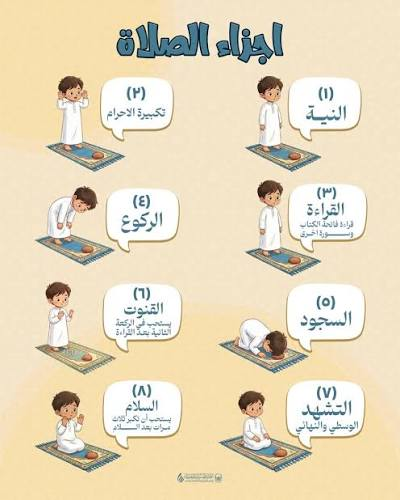

شرح مختصر لصفة الصلاة كما وردت في القرآن الكريم وفي صحيحي البخاري ومسلم، ليتعلمها المبتدئ خطوة بخطوة، ويراجعها من يحتاج تذكيراً.
فرضها الله على المؤمنين في أوقات محددة:
﴿إِنَّ الصَّلَاةَ كَانَتْ عَلَى الْمُؤْمِنِينَ كِتَابًا مَّوْقُوتًا﴾النساء: 103
وبيّن النبي ﷺ صفتها بقوله:
«صَلُّوا كَمَا رَأَيْتُمُونِي أُصَلِّي»صحيح البخاري، كتاب الأذان، حديث 631
لذلك يقوم هذا الدرس على الخطوات التي وصفها النبي ﷺ.
الشروط تسبق الصلاة ولا تكون جزءاً منها. من دونها لا تصح:
الأركان أفعال لا تصح الصلاة إلا بها، ولا تسقط بالنسيان. على المشهور عند الجمهور:
يختلف الفقهاء في عدّ بعض الأركان؛ فالحنفية يعدّون الفاتحة واجباً لا ركناً. وفي الحديث الصحيح قال النبي ﷺ للذي أساء صلاته: «ارْجِعْ فَصَلِّ فَإِنَّكَ لَمْ تُصَلِّ» ثلاث مرات، فأمره بالطمأنينة في كل ركن. صحيح البخاري، كتاب الأذان، حديث 793

قف مستقبلاً القبلة، ونوِ في قلبك الصلاة التي تريد أداءها. ارفع يديك حذو منكبيك وكبّر: «الله أكبر». ثم ضع يمناك على يسراك على صدرك.
بعد التكبير يُستحب أن تقول دعاء الاستفتاح، ثم تبدأ القراءة.
البخاري، الأذان، 631اقرأ سورة الفاتحة في كل ركعة. وفي الركعتين الأوليين تضيف بعدها ما تيسر من القرآن.
«ثُمَّ اقْرَأْ مَا تَيَسَّرَ مَعَكَ مِنَ الْقُرْآنِ»
البخاري، الأذان، 793كبّر وانحنِ حتى يستوي ظهرك ورأسك، وضع يديك على ركبتيك. قل: «سبحان ربي العظيم»، واطمئن في ركوعك.
البخاري، الأذان، 793 (حتى تطمئن راكعا)ارفع رأسك ويديك قائلاً: «سمع الله لمن حمده»، ثم وأنت قائم: «ربنا ولك الحمد». اعتدل واطمئن قبل السجود.
البخاري، الأذان، 793 (حتى تعتدل قائما)كبّر واسجد على سبعة أعضاء: الجبهة مع الأنف، واليدين، والركبتين، وأطراف القدمين. قل: «سبحان ربي الأعلى»، واطمئن في سجودك.
البخاري، الأذان، 793 (حتى تطمئن ساجدا)ارفع رأسك مكبراً واجلس مطمئناً، وقل: «رب اغفر لي». ثم اسجد السجدة الثانية كالأولى.
البخاري، الأذان، 793 (حتى تطمئن جالسا)بعد السجدة الثانية في الركعة الثانية، اجلس للتشهد:
«التَّحِيَّاتُ لِلَّهِ وَالصَّلَوَاتُ وَالطَّيِّبَاتُ، السَّلَامُ عَلَيْكَ أَيُّهَا النَّبِيُّ وَرَحْمَةُ اللَّهِ وَبَرَكَاتُهُ، السَّلَامُ عَلَيْنَا وَعَلَى عِبَادِ اللَّهِ الصَّالِحِينَ، أَشْهَدُ أَنْ لَا إِلَهَ إِلَّا اللَّهُ، وَأَشْهَدُ أَنَّ مُحَمَّدًا عَبْدُهُ وَرَسُولُهُ»
الصلاة الثلاثية والرباعية تتشهد في الركعة الثانية ثم تقوم، والتشهد الأخير يكون في آخر الصلاة.
حديث ابن مسعود، متفق عليه (صحيح البخاري وصحيح مسلم)بعد التشهد الأخير والصلاة على النبي ﷺ والدعاء المأثور، سلّم عن يمينك ثم عن يسارك: «السَّلَامُ عَلَيْكُمْ وَرَحْمَةُ اللَّهِ».
صحيح مسلم، كتاب الصلاةلكل خطوة مكان للفيديو. إن أردت أن تشاهد الحركة قبل أن تقرأ، ابدأ من هنا.
| الصلاة | عدد الفرض | وقتها |
|---|---|---|
| الفجر | ركعتان | من طلوع الفجر الصادق إلى طلوع الشمس |
| الظهر | أربع | من زوال الشمس إلى أن يصير ظل كل شيء مثله |
| العصر | أربع | من نهاية وقت الظهر إلى غروب الشمس |
| المغرب | ثلاث | من غروب الشمس إلى مغيب الشفق |
| العشاء | أربع | من مغيب الشفق إلى منتصف الليل |
الأوقات تقريبية، والأدق ما تعلنه المساجد أو الهيئات الرسمية في بلدك.
من القرآن الكريم:
﴿وَأَقِيمُوا الصَّلَاةَ وَآتُوا الزَّكَاةَ﴾ البقرة: 43
﴿قَدْ أَفْلَحَ الْمُؤْمِنُونَ * الَّذِينَ هُمْ فِي صَلَاتِهِمْ خَاشِعُونَ﴾ المؤمنون: 1–2
﴿إِنَّ الصَّلَاةَ تَنْهَىٰ عَنِ الْفَحْشَاءِ وَالْمُنكَرِ﴾ العنكبوت: 45
﴿إِنَّ الصَّلَاةَ كَانَتْ عَلَى الْمُؤْمِنِينَ كِتَابًا مَّوْقُوتًا﴾ النساء: 103
من صحيح البخاري ومسلم:
«صَلُّوا كَمَا رَأَيْتُمُونِي أُصَلِّي» البخاري، الأذان، 631
حديث المسيء في صلاته البخاري، الأذان، 793
حديث التشهد عن ابن مسعود متفق عليه
حديث التسليم عن اليمين والشمال مسلم، كتاب الصلاة
هذا الدرس للتعليم العام. الأحكام التفصيلية، وما فيه خلاف بين المذاهب، ترجع فيه إلى أهل العلم، ويُنصح بتعلم الصلاة من إمام أو معلم موثوق.